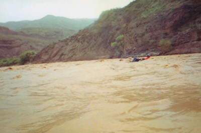
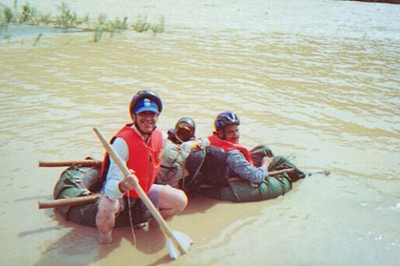

Be carful with whom you befriend. Faramarz Parsi is an architecht, but he is also a desert crosser of fearless qualities. I knew he was reckless in his desert adventures. But when he proposed a river rafting trip to the Qizil-Ouzan rivar in western Iran, I said why not, he has been there at least eigth times and it should be fun. Little did I know this time was a very wet year and the river was at a record high level because of the spring time outpours. And the equipment? We used three 'rafts' each consisting of two bus inner tubes and two showel handels to connect them. Meager gear, compared to hi-tech rafts of today. We spent three days (and nights) on the river, and at the end of the third day we survived a dangerous turbulance and called it quits. I have seen death at close range a few times, but this was the worst. Me and Faramarz are still friends, but I will be more cautious in accepting his offers for trips in the future. Here are some pictures from the trip. The quality is low, because they are captured from an hi8 video.
The River
Qizil-Ozan River


Our Equipment
Two inner tubes and two showel handels.
Resting in a deserted small village on the river bank